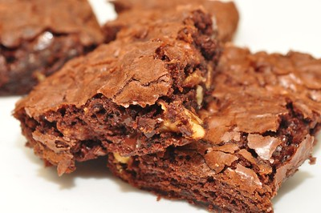

Home
Bombshell Brownies

Description
An easy recipe with the perfect combination of ingredents to make
sweet, tasty and soft brownies.
Ingredients
- 3 cups white sugar
- 1 cub butter - melted
- 1 tablespoon vanilla extract
- 4 eggs
- 1 and a half cups all-purpose flour
- 1 cup unsweetened cocoa powder
- teasppon salt
- 1 cup semisweet chocolate chips
Steps
- Lightly grease a 9x13-inch baking dish.
- Preheat the oven to 350 degrees F (175 degrees C)
- Combine sugar, melted butter, and vanilla in a large bowl.
Beat in eggs, one at a time, mixing well after each addition,
until thoroughly blended.
- Sift flour, cocoa powder, and salt into a separate large bowl. Gradually
stir flour mixture into egg mixture until blended;
stir in chocolate chips.
- Spread batter evenly into the prepared baking dish.
- Bake in the preheated oven until top is dry and edges have started to pull away
from the sides of the pan, about 35 to 40 minutes.
- Let cool completely before slicing into 24 squares.
- Enjoy your chocolate brownies!!!